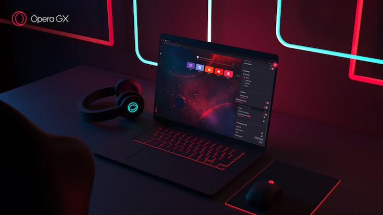
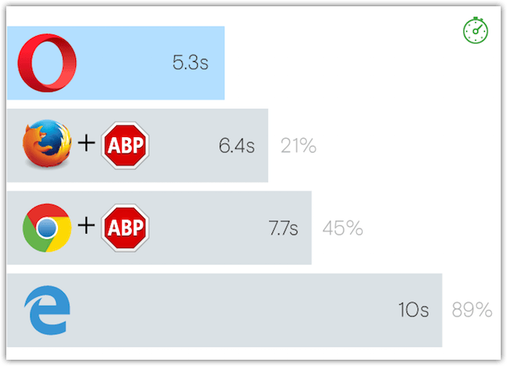
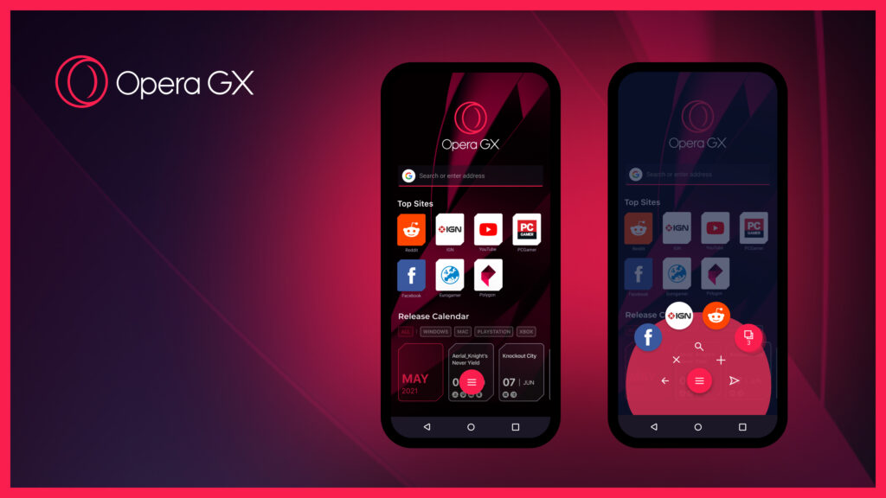

Opera GX — это специальная геймерская версия браузера Opera. В ней реализованы уникальные функции, такие как ограничение использования ресурсов ЦП, оперативной памяти и сетевого трафика, помогающие играть и просматривать веб-страницы с максимальным удобством.
Помимо великолепного дизайна мобильная и настольная версии Opera GX могут похвастаться скоростью, обширными возможностями настройки и высоким уровнем конфиденциальности. Ознакомьтесь с эксклюзивными встроенными функциями этого браузера и узнайте, почему люди выбирают Opera GX.
Привнеси свой игровой стиль на смартфон. Обменивайся данными на мобильном и десктопном браузерах с помощью функции обмена файлами Flow, серфи в Интернете одной рукой на ходу с помощью Fast Action Button и защити свою конфиденциальность благодаря встроенному блокировщику рекламы в мобильном браузере для геймеров.
